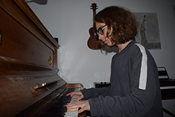
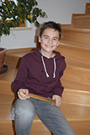
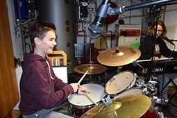
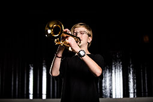

Über uns
NOXADA - Wer sind wir?
NOXADA
Wir - Noel Andexlinger, Daniel Ortner, Xaver Elias Schutti (von links nach rechts) - sind 13 & 14 Jahre alt und gehen gemeinsam in eine Klasse. Wir besuchen den Musikzweig des Bundesrealgymnasiums Adolf-Pichler-Platz in Innsbruck, wo wir uns auch kennengelernt haben.
Wie ist unsere Band entstanden?
2019 fand in unserer Schule eine Schulversanstaltung statt, die Musik fehlte dazu allerdings noch. Unser Musiklehrer somit fragte Xaver und Noel, ob sie Lust hätten zu spielen, meinte aber auch, dass ein Schlagzeug fehlen würde. So wurde auch Dani ein wichtiges Mitglied unserer Band.
Die Band
Noel Andexlinger
Ich bin Noel Andexlinger, geboren 2007, und gehe derzeit ins BRG APP zur Schule. In unserer Band bin ich der Pianist, Sänger und Singer-Songwriter. Gesungen habe ich schon bevor ich reden konnte. Klavier lerne ich seit ich 6 Jahre alt bin bei Julia Spath und in der 2. Klasse Gymnasium habe ich mit Jazzpiano-Unterricht bei René Schützenhofer begonnen. Außerdem habe ich schon in der Volksschule meine ersten Stücke komponiert, die instrumental oder mit Gesang waren. Als Pianist bin ich, so wie Dani, in der Big Band meines Gymnasiums. Meine Hobbies sind neben Klavierspielen, Singen, Komponieren, Improvisieren und Musik prosuzieren auch Radfahren, Skifahren, Rodeln und Lesen.
{kind=link}
{kind=link}
© Pia Andexlinger
Daniel Ortner
Hallo, mein Name ist Dani Ortner und bin 14 Jahre alt. Ich wohne in Absam und besuche mit meinen Bandkollegen das BRG APP in Innsbruck. Ich bin der Schlagzeuger von NOXADA und spiele dieses Instrument jetzt schon das 8. Jahr. In der Musikschule Hall werde ich von Flo Baumgartner unterrichtet. Außerdem bin ich auch Mitglied bei der Musikkapelle Absam, der Jungmusik "the Thabs" und der Big Band des Bundes-Real-Gymnasiums Adolf-Pichler-Platz. Auch habe ich bereits dreimal beim Landes- und Bundeswettbewerb "Prima la musica" erfolgreich teilgenommen. Meine Hobbies neben der Musik sind Eishockey, Skifahren, Radfahren und Computerspielen.
 {kind=link}
{kind=link}
© Elena Ortner & Sabine Ortner
Xaver Elias Schutti
Ich heiße Xaver Schutti und bin 13 Jahre alt. Ich spiele sowohl klassische als auch Jazztrompete seit ich sechs Jahre alt bin. Mein besonderes Interesse gilt der Elektronik und den Klangmöglichkeiten des experimentellen Jazz. Für mich ist Musik die schönste Art, kreativ zu sein. Mein Traum ist es Berufstrompeter zu werden.
{kind=link}
{kind=link}
© Simon Rainer